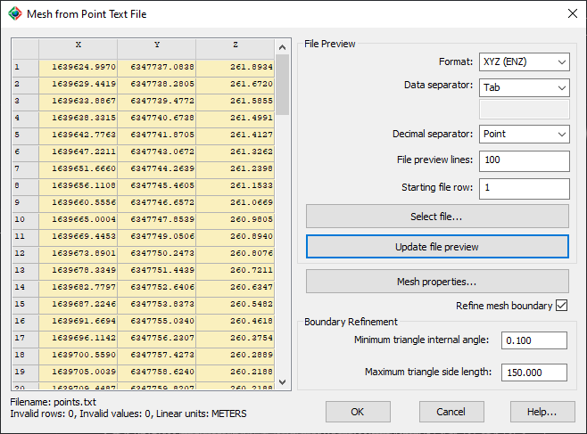
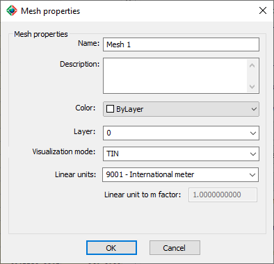

|
|
Toolbar:
Menu: CAD-Earth > Mesh > Mesh Explorer. Mesh Explorer node:
Context Menu: Add Terrain Mesh > From File > XYZ text file
|
|
|
Command line: CE_MESHEXPLORER
CAD-Earth version: Premium. |
(1).png)
.png)
.png)
(1).png)
Command description:
Create a terrain mesh reading point coordinates from a text file. You can select the coordinate order in the file and the data and decimal separator character to split the coordinate information. A file preview is shown to check if the specified file format and data separator are correct. You can specify a minimum triangle internal angle and a maximum triangle side length value to refine the mesh boundary.

Dialog box settings:
ØFile Preview.
•Format. You can select from Point-East-North-Elevation (nXYZ), East-North-Elevation (XYZ), Point-North-East-Elevation (nYXZ), or North-East-Elevation (YXZ).
•Data separator. You can select from space, comma, semicolon, tab, or custom. If you select custom, you can type in the text box the character to be considered a data separator.
•Decimal separator. You can select a point or a comma to split the integer and decimal data.
•File preview lines. Specify the number of lines from the file that will be processed to preview the coordinates.
•Starting file row. The line number where the file preview will begin.
ØSelect file. To select another file to preview.
ØUpdate file preview. The file preview will be updated with the file format, data separator, the number of preview lines, and starting file row specified.
ØMesh properties. A dialog box will be shown, where you can set the following properties:
•Name. Enter text to identify the mesh. Must not contain the following characters: | * : ; > < ? , = ` \
•Description. Enter additional information about the mesh (optional).
•Color. Select the color for the mesh lines and points.
•Layer. Select the layer where the mesh will be created.
•Visualization mode. The mesh can be displayed in any of the following visualization modes:
•TIN: Mesh triangles with continuous lines.
•Points: Mesh vertices will be shown as simple points with no size.
•Boundary & Points: Triangle sides that are not adjoined to another triangle will be shown. Internal vertices will be displayed as simple points with no size.
•Boundary Only: Only triangle sides that are not adjoined to another triangle will be shown, creating one or several outlines.
•Linear units. The distance unit selected will define the mesh scale factor. If the required unit is not included in the list, you can select 'Custom' at the end of the list to define a unit conversion factor.
•Linear unit to m factor. The units of measure used by CAD-Earth are meters, which are converted to the unit selected using this factor to display distance, area and volume calculations.
ØRefine mesh boundary. Triangles on the mesh boundary will be removed according to the parameters specified.
•Minimum triangle internal angle. (Decimal degrees) Triangles that have a vertex with an internal angle less or equal to the value specified, will be removed.
•Maximum triangle side length. (Drawing units) Triangles that have a side equal or greater than the value specified, will be removed.

Tips:
•Select the Update file preview button if you change any of the file preview parameters to see the result.
•The file preview rows will have a background color of light yellow when the data can be read correctly, and a color of light red when the file data doesn't check the parameters specified.
•You can prepare a table in Excel with the coordinate information and export it to a CSV file, and select the comma data separator when importing the mesh from the text file.
•The file must be in ASCII or UTF-8 format to be read correctly.
Copyright © 2023 Arqcom Software
Google Earth© is a registered trademark of Google inc. All other trademarks are the property of their respective owners.